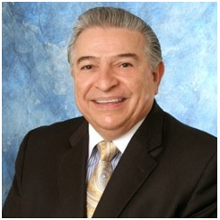

Cambridge Mortgage, Inc. is a family owned and operated licensed mortgage brokerage business located in South Florida. Our principal broker has been in the finance industry since 1973 and our company has been in operations since 1991.
We give each loan the utmost attention and service to make sure that our clients are pleased with us every step of the way. We are looking to build life-long relationships with our clients as a great portion of our business comes from our past client referrals.
Commercial Loans - Industrial Buildings, Marinas, Large Apartment Complexes, Vacant Land, Warehouses, Office Buildings, Adult-Care Centers, Mobile Home Parks, Anchor and Non-Anchor Retail Centers. Competitive pricing and fast closings. We are able to provide financing throughout the United Stated and Overseas as well.
Hard Equity / Private Investor Loans - Some loans do not meet a Bank's lending requirements. We have an extensive list of private investors who are willing to lend money on these type of loans for Foreclosure Bailouts, Land Loans, Environmental Issues, etc. Typical financing is 65% of the appraised value of the property.
Small Business Administration Loans (SBA) - If you are looking to purchase a business, we will help you obtain financing through the Small Business Administration (SBA).
Anthony Petruzzi

Cambridge Mortgage, Inc.
Phone: 561-756-5428 - Fax: 561-241-1116